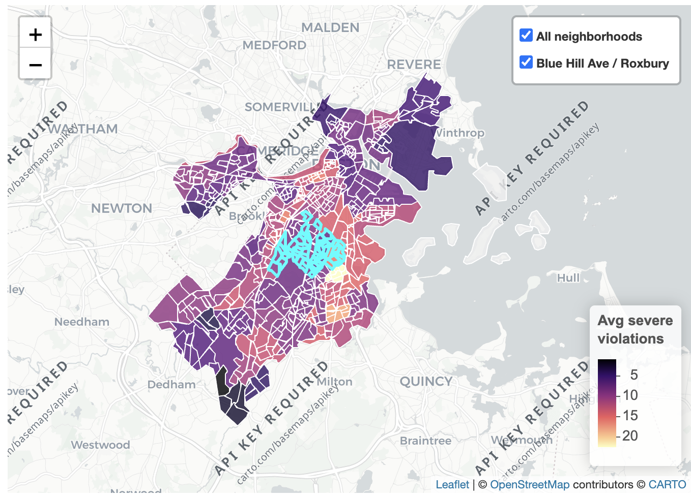

Community-Inspired Food Safety Metric
Data Analyst & Urban Researcher
Developed a Complaint-to-Violation Ratio (CVR) metric to examine food safety disparities along Boston's Blue Hill Avenue corridor. By linking health inspection data (REI), 311 complaint reports, and neighborhood demographics (ACS), the project uncovers reporting gaps influenced by income, language barriers, and community knowledge—revealing how civic participation and public safety interact across neighborhoods.
Project image
assets/map.png
